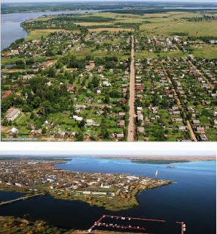

Калязин
Топонимика
Калязин – один из 36 районных центров Тверской области. Первое упоминание относится к четвертому – пятому веку нашей эры, когда на волжских берегах поселились угро-финские племена. Они занимались рыболовством и выходили на рыбную ловлю на маленьких парусных суденышках «каальяси», а на их языке рыба – «кола». Возможно, эти два слова и дали название города – Калязин.
Есть на Волге, красавице русской
Город маленький, скромный на вид.
И названье простое – Калязин-
Ни о чем еще не говорит.
Но есть в нем особая прелесть,
Как у всех городов на Руси.
Чем он важен и чем же он дорог –
У калязинцев лучше спроси.
